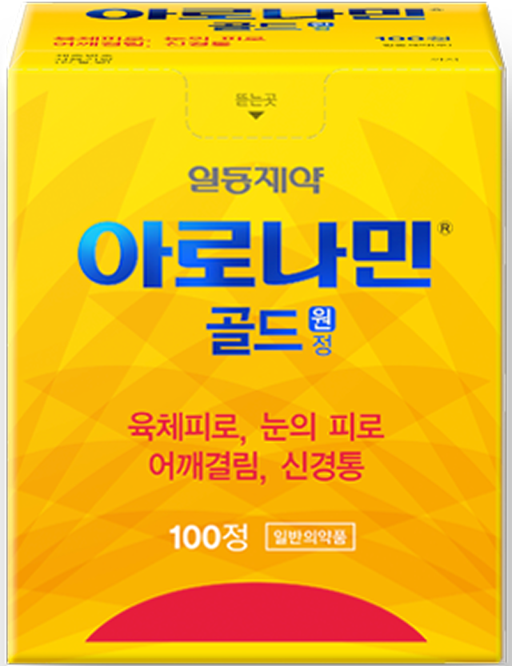

기업소개
기업소개
아로나민골드원AronaminGold
활성비타민 4종과 비타민C·E를 담은 국민 입문 피로회복제

아로나민골드원
활성형 비타민 B군을 함유하여 일상 속 피로와 체력 저하를 효과적으로 관리해 주는 대표 피로회복제입니다. 육체피로를 개선하고 바쁜 현대인들에게 부족하기 쉬운 영양을 간편하게 보충해 줍니다.
- 육체피로, 체력저하, 눈의 피로 완화
- 신경통, 근육통, 관절통(요통, 어깨결림 등) 완화
- 병중·병후 체력 저하 시 비타민 B군 보급
- 고함량 활성비타민으로 신체 에너지를 간편하게 충전하고 싶으신 분
- 눈의 피로와 어깨결림 등 일상적인 피로 증상을 개선하고 싶은 분
- 학업이나 업무로 인한 체력 저하와 근육 피로를 겪는 분